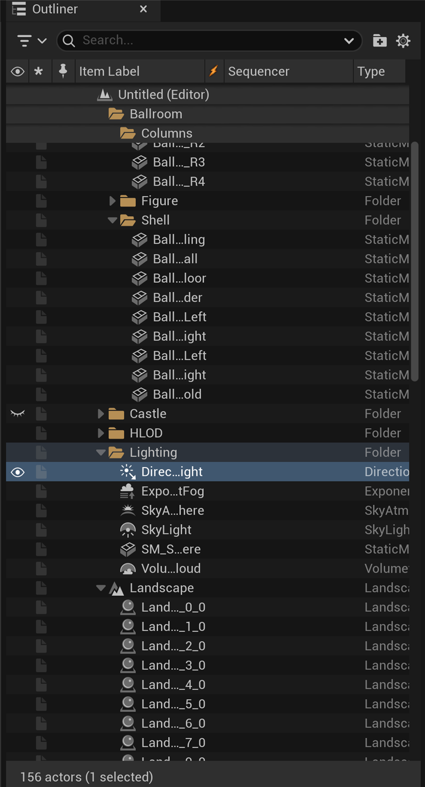
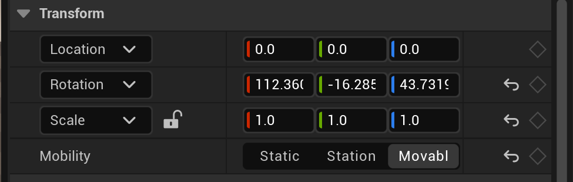

🎭 Actors and Components
If levels are the stages where your game takes place, then Actors are the cast members—every object, light, sound, and interactive element is an Actor. Understanding how Actors work and how Components give them functionality is fundamental to building anything in Unreal Engine.
🎯 Learning Objectives
By the end of this lesson, you will be able to:
- Define what an Actor is in Unreal Engine terminology
- Explain the Actor-Component model and how it provides modular functionality
- Differentiate between Static Mesh Actors and other common actor types
- Manipulate transform properties: Location, Rotation, and Scale
- Use transform gizmos and understand pivot points
- Duplicate, group, and organize actors efficiently in your levels
- Apply best practices for actor management in real projects
Estimated Time: 45-60 minutes
Prerequisites: Lesson 2.1 - Understanding Levels
In This Lesson
What is an Actor?
Imagine you're setting up a stage for a play. You need props—a table, a chair, a lamp. You need lighting—spotlights, ambient fixtures. You need sound—speakers for background music and sound effects. You might even need invisible elements like trigger zones that cue the next scene. In Unreal Engine, every single one of these elements—visible or invisible—is called an Actor.
📖 Definition
Actor: An Actor is the base class for any object that can be placed or spawned in an Unreal level. Think of it as the fundamental building block of your game world. Actors can represent 3D models, lights, cameras, sounds, particle effects, triggers, player spawn points, and much more.
The term "Actor" comes from the theater metaphor we mentioned—just as a play has actors on stage, your game level has Actors in the world. But unlike human actors who can only play one role, Unreal Actors are incredibly flexible. A single Actor might be a static prop, or it might be an enemy character with AI, or a door that opens when you approach it.
Everything is an Actor
When you look at your level in the Unreal Editor, nearly everything you see (and many things you don't see) is an Actor:
- Visible Actors: 3D models (Static Mesh Actors), particle effects, decals, text renders, skeletal meshes (animated characters)
- Lighting Actors: Directional lights (sun), point lights, spot lights, sky lights, rect lights
- Audio Actors: Ambient sound actors, audio components, sound cues
- Gameplay Actors: Player start points, triggers, volumes, spawn points, cameras
- Invisible Helpers: Collision volumes, navigation meshes, reflection captures, atmospheric elements
💡 Real-World Analogy
Think of Actors like LEGO bricks. Each brick is a self-contained piece that can be placed anywhere in your creation. Some bricks are simple blocks (like a cube-shaped 3D model), while others have special features (like a light-up brick or a motor brick). You combine different types of bricks to build something complex, just as you combine different types of Actors to build a game level.
Actors in the Outliner
Every Actor placed in your level appears in the Outliner panel (typically on the right side of the editor). The Outliner is like a cast list for your stage—it shows every Actor present in the current level, organized hierarchically.

Figure: The Outliner lists every Actor in the level, grouped into folders. The selected DirectionalLight is highlighted, and the Type column names each Actor's class.
When you select an Actor in the Outliner, it becomes highlighted in the viewport, and its properties appear in the Details panel. This three-way connection—Outliner, Viewport, and Details—is how you'll interact with Actors constantly while building your levels.
✅ Pro Tip
Get comfortable navigating between the Outliner and the viewport. You can select an Actor in the Outliner and press F to instantly focus the viewport camera on it. Conversely, clicking an Actor in the viewport selects it in the Outliner. This two-way workflow makes organizing complex scenes much easier.
Actor Properties
Every Actor has a set of properties that define its behavior and appearance. When you select an Actor and look at the Details panel, you'll see categories like:
- Transform: Location, Rotation, and Scale—where the Actor is, how it's oriented, and how big it is
- Rendering: Whether the Actor is visible, casts shadows, or affects reflections
- Collision: How the Actor interacts with physics and other Actors
- Actor-specific properties: Settings unique to that type of Actor (light intensity for lights, sound volume for audio Actors, etc.)
Changing these properties in the Details panel immediately updates how the Actor behaves and appears in your level.
Figure: The relationship between Actors and the editor panels
The Actor-Component Model
Here's where Unreal's design becomes truly elegant. Rather than having thousands of different specialized Actor types that each do one specific thing, Unreal uses a modular system called the Actor-Component Model. This is one of the most important concepts to understand in Unreal Engine.
What are Components?
A Component is a piece of functionality that you can attach to an Actor to give it specific capabilities. Think of Components like accessories or attachments—each one adds a particular feature to the base Actor.
📖 Definition
Component: A modular piece of functionality that can be added to an Actor. Components define what an Actor can do—whether it has a 3D mesh, makes sounds, produces light, simulates physics, or has collision. Actors are essentially containers for Components.
Let's use a concrete example. Imagine you want to create a lamp Actor in your level. What does a lamp need?
- A Static Mesh Component to display the lamp's 3D model
- A Point Light Component to actually emit light
- Maybe a Particle System Component if you want glowing dust particles around the bulb
- Maybe an Audio Component if the lamp hums or buzzes
Instead of having a specialized "LampActor" class in the engine, you take a base Actor and attach these Components to it. The Actor itself is just a container—the Components are what give it functionality.

Figure: One lamp Actor is a container for four Components · a Static Mesh (the model), a Point Light (the glow), an Audio component (the hum), and a particle system (drifting dust). Each Component adds one capability.
Container] --> B[Static Mesh Component
The physical lamp model] A --> C[Point Light Component
Emits light] A --> D[Particle System Component
Glowing dust effect] A --> E[Audio Component
Electrical hum sound] style A fill:#667eea,color:#fff style B fill:#4CAF50,color:#fff style C fill:#4CAF50,color:#fff style D fill:#4CAF50,color:#fff style E fill:#4CAF50,color:#fff
Figure: A lamp Actor composed of multiple Components
Why This Model is Powerful
The Actor-Component model provides several huge advantages:
- Flexibility: You can mix and match Components to create exactly the behavior you need without being limited to pre-defined Actor types
- Reusability: The same Components can be used across many different Actors. The Light Component that illuminates your lamp works the same way in a streetlight, a torch, or a glowing crystal
- Organization: Each Component handles one specific aspect of functionality, making the system easier to understand and debug
- Extensibility: You can create custom Components with unique behaviors and attach them to any Actor
💡 Real-World Analogy
Think of a smartphone. The phone itself (the Actor) is just a shell. But you add components to it: a camera module (Camera Component), a speaker (Audio Component), a screen (Display Component), a vibration motor (Force Feedback Component), and so on. You could configure two phones differently—one with a better camera but weaker speaker, another with stereo speakers but a simpler camera—using the same base phone and different component combinations. That's exactly how Actors and Components work in Unreal.
Common Component Types
Unreal Engine comes with dozens of built-in Component types. Here are the most commonly used ones you'll encounter:
| Component Type | Purpose | Example Use |
|---|---|---|
| Static Mesh Component | Displays a 3D model | Buildings, props, furniture, vehicles |
| Skeletal Mesh Component | Displays an animated 3D character/creature | Characters, animated creatures, ragdolls |
| Light Component | Emits light (Point, Spot, Directional, Rect) | Lamps, torches, sun, streetlights |
| Audio Component | Plays sound effects or music | Ambient sounds, footsteps, explosions |
| Particle System Component | Creates visual effects (smoke, fire, sparks) | Fire, smoke, magic effects, explosions |
| Camera Component | Defines a viewpoint for rendering | Player cameras, security cameras, cutscenes |
| Box/Sphere/Capsule Collision | Defines collision boundaries | Triggers, damage volumes, barriers |
| Movement Component | Handles physics and movement | Character walking, projectile motion |
When you create a Blueprint or place an Actor in your level, you're working with this Component system whether you realize it or not. Understanding this foundation helps you appreciate how Unreal gives you building blocks instead of rigid, pre-defined objects.
⚠️ Watch Out
The terms "Actor" and "Component" might feel abstract at first. Remember: Actors are the "what" (the objects in your level), and Components are the "how" (what makes those objects work). A chair Actor might just have a Static Mesh Component. An interactive door Actor might have a mesh, collision, audio, and custom Blueprint logic components all working together.
Common Actor Types
While all Actors share the same fundamental structure (containers for Components), Unreal provides many pre-configured Actor classes that come with commonly-used Component setups. These are the Actor types you'll place in your levels most frequently.
Static Mesh Actor
The workhorse of level building. A Static Mesh Actor displays a 3D model that doesn't animate or deform (hence "static"). Buildings, rocks, furniture, vehicles, props—if it's a solid, non-animated object, it's typically a Static Mesh Actor.
- Default Components: Static Mesh Component
- Common uses: Environment geometry, props, decorations
- Performance note: Static meshes can be batched together for efficient rendering
Light Actors
These Actors emit light to illuminate your level. There are several types:
- Directional Light: Simulates sunlight—parallel rays that illuminate everything equally
- Point Light: Emits light in all directions from a single point (like a lightbulb)
- Spot Light: Emits a cone of light in one direction (like a flashlight)
- Rect Light: Emits light from a rectangular surface (like a window or TV screen)
We'll cover lighting in depth in Module 4, but for now, know that these are essential for making your levels visible and establishing mood.
Camera Actor
Defines a viewpoint in your level. During gameplay, the player's view is rendered from a camera. Camera Actors are also used for:
- Cutscenes and cinematics
- Security camera views
- Alternative perspective switches
- Testing composition and framing
Trigger Volumes and Collision Actors
These are invisible gameplay elements that detect when players or other Actors enter, exit, or overlap them:
- Trigger Box: A box-shaped volume that fires events when something enters it
- Trigger Sphere: A spherical trigger volume
- Blocking Volume: An invisible wall that prevents movement through an area
You'll use these extensively for gameplay logic—opening doors, starting cutscenes, spawning enemies, etc.
Blueprint Actors
These are custom Actors you create using Unreal's visual scripting system (Blueprints). They can combine any Components you want with custom logic. We'll dive deep into Blueprints in Module 5, but examples include:
- Interactive doors that open and close
- Collectible items that disappear when touched
- Moving platforms
- Enemy characters with AI behavior
Figure: Common Actor types you'll work with in Unreal Engine. Each serves a specific purpose in building your levels.
✅ Pro Tip
To place Actors, the quickest route in UE 5.8 is the green + Add button (the Quick Add button) on the main toolbar, which drops down a categorized menu of Shapes, Lights, Volumes, Visual Effects and more. You can also open the full Place Actors panel from Window → Place Actors and drag items straight into the viewport, right-click in the viewport for a context menu, or drag any asset in from the Content Browser. The Place Actors panel groups Actors by type so related items are easy to find.
Transform Properties: Location, Rotation, and Scale
Every Actor in your level exists in 3D space, and three fundamental properties define exactly where it is, how it's oriented, and how big it is. Together, these properties are called the Transform.
📖 Definition
Transform: The complete spatial description of an Actor's position, orientation, and size in 3D space. It consists of three components: Location (where), Rotation (how it's oriented), and Scale (how big).

Figure: Every Actor's Transform lives here in the Details panel · Location, Rotation and Scale, each split into color-coded X, Y and Z values. This is where you read or type exact numbers.
Understanding 3D Coordinates
Before diving into transforms, you need to understand how Unreal represents 3D space. Like most 3D applications, Unreal uses a three-axis coordinate system:
Figure: Unreal Engine's 3D coordinate system. X (red) = forward/back, Y (green) = left/right, Z (blue) = up/down.
- X-axis (Red): Forward and backward (positive X = forward)
- Y-axis (Green): Left and right (positive Y = right)
- Z-axis (Blue): Up and down (positive Z = up)
💡 Why This Matters
Different 3D software uses different conventions. Some programs (like Maya) use Y as "up," while Unreal uses Z as "up." If you're importing assets from other tools, you may need to rotate them 90 degrees to match Unreal's coordinate system. Understanding the coordinate system helps you debug why imported models might appear sideways or upside down.
Location
Location defines where the Actor is positioned in 3D space using X, Y, and Z coordinates. Each value is measured in centimeters from the world origin (0, 0, 0).
Examples:
Location: (0, 0, 0)- At the world originLocation: (500, 0, 0)- 5 meters forward (500cm) from the originLocation: (0, -300, 200)- 3 meters left and 2 meters up from the origin
When you move an Actor in the viewport using the move gizmo (we'll cover that next), you're changing its Location values.
Rotation
Rotation defines how the Actor is oriented in 3D space. Instead of X, Y, Z coordinates, rotation uses three angles measured in degrees: Roll, Pitch, and Yaw.
Figure: The three types of rotation. Roll (X-axis), Pitch (Y-axis), and Yaw (Z-axis) control how an Actor is oriented in space.
- Roll (X-axis): Rotation around the forward/backward axis—like an airplane banking left or right
- Pitch (Y-axis): Rotation around the left/right axis—like an airplane's nose going up or down
- Yaw (Z-axis): Rotation around the up/down axis—like turning your head left or right
In the Details panel, you'll see rotation displayed as (X=0, Y=0, Z=0) where each value is in degrees. A value of 0 means no rotation, 90 means a quarter turn, 180 is a half turn, and 360 is a full rotation back to the starting position.
⚠️ Gimbal Lock
When rotating objects in 3D, you might encounter a phenomenon called "gimbal lock" where two rotation axes become aligned and you lose a degree of freedom. This is an inherent quirk of Euler angle rotation (the Roll-Pitch-Yaw system). For most beginner work, you won't notice this, but if you're doing complex animations or camera work, be aware it exists. Unreal provides tools like quaternions to work around it in advanced scenarios.
Scale
Scale controls the size of the Actor. Like Location, it uses X, Y, and Z values, but these represent multipliers rather than distances.
Scale: (1, 1, 1)- Original size (100%)Scale: (2, 2, 2)- Twice as large in all dimensions (200%)Scale: (0.5, 0.5, 0.5)- Half size (50%)Scale: (1, 2, 1)- Normal width/height, but stretched to double length along Y-axis
Figure: Different scale values. Uniform scaling (equal X, Y, Z) maintains proportions, while non-uniform scaling can distort the Actor.
✅ Pro Tip
When possible, scale objects in the 3D modeling software (like Blender) before importing them into Unreal, rather than scaling them in-engine. This ensures proper collision, lighting, and performance. In-engine scaling is fine for quick prototyping, but for final assets, models should be at their correct size (1, 1, 1 scale) when imported.
Pivot Points and Transform Gizmos
Now that you understand what transforms are, let's look at how you actually manipulate them in the Unreal Editor using visual tools called gizmos.
What is a Pivot Point?
Every Actor has a pivot point (also called the "origin" or "anchor point")—a specific point within or around the Actor that defines where its Location is measured from and where rotations occur around.
📖 Definition
Pivot Point: The reference point for an Actor's transform. When you rotate an Actor, it spins around its pivot point. When you set its Location to (0, 0, 0), the pivot point sits at the world origin.
Think of a door. A door rotates around its hinges, not around its center. In 3D terms, the door's pivot point would be placed at the hinge location. When you rotate the door Actor, it swings open naturally around that pivot.
Figure: Pivot point placement matters! A door with its pivot at the hinge rotates correctly, while a center pivot creates unrealistic movement.
Pivot points are usually set in your 3D modeling software before importing assets into Unreal. For most objects, the pivot is at the base center (for characters and props) or at a functionally important point (like hinges for doors, axles for wheels).
Transform Gizmos
Gizmos are the colorful 3D widgets that appear when you select an Actor in the viewport. They provide visual, interactive controls for manipulating Location, Rotation, and Scale.
Figure: The three transform gizmos. Use W/E/R to switch between them, or Space to cycle through.
✅ Pro Tip
Learn the keyboard shortcuts! Pressing W, E, or R to quickly switch between Move, Rotate, and Scale gizmos will make your workflow much faster than constantly clicking toolbar buttons. Also, you can hold Ctrl while dragging to snap to grid increments, making precise placement easier.
Duplicating, Grouping, and Organizing Actors
As your levels grow more complex, you'll need efficient ways to manage dozens or hundreds of Actors. Unreal provides several tools for organizing and manipulating multiple Actors at once.
Duplicating Actors
There are multiple ways to duplicate an Actor:
- Ctrl+W: Select an Actor and press Ctrl+W to duplicate it in place (slightly offset)
- Alt+Drag: Hold Alt while dragging an Actor with the move gizmo to create a copy
- Ctrl+C, Ctrl+V: Copy and paste like any software
Duplicated Actors inherit all properties from the original, including materials, lighting settings, and any custom configurations.
Grouping Actors
When you have multiple Actors that logically belong together (like all the pieces of furniture in a room), you can group them:
- Select multiple Actors (hold Ctrl and click each one)
- Press Ctrl+G to group them
- The grouped Actors now move, rotate, and scale together as one unit
- Press Ctrl+Shift+G to ungroup
Groups appear in the Outliner with a special folder icon, and you can nest groups within groups for hierarchical organization.
Folders in the Outliner
For organizational purposes (without affecting transforms), you can create folders in the Outliner:
- Right-click in the Outliner
- Select Create Folder
- Name it something descriptive (e.g., "Furniture", "Lighting", "Props")
- Drag Actors into the folder to organize them
Folders are purely organizational—they don't create parent-child relationships like attaching Actors does.
Attaching Actors (Parent-Child Relationships)
You can create true hierarchical relationships where one Actor is the parent and others are children:
- Select the Actor you want to become the child
- Drag it onto another Actor in the Outliner (the parent)
- The child Actor becomes indented under the parent
When you move, rotate, or scale the parent Actor, all children move with it. This is useful for:
- Attaching a lamp to a ceiling so they move together
- Attaching wheels to a car body
- Creating compound objects that need to stay together
⚠️ Watch Out
Be careful with parent-child relationships and scale. If you scale a parent Actor, the children scale too—and if a child already has scale applied, the effects multiply (a parent at 2x scale with a child at 2x scale results in the child appearing at 4x scale). This can lead to unexpected sizing issues.
Selection Shortcuts
Efficiently selecting Actors is crucial for productivity:
| Action | Shortcut |
|---|---|
| Select multiple Actors | Hold Ctrl and click each Actor |
| Deselect an Actor from a group | Hold Ctrl and click the selected Actor |
| Select all Actors of the same class | Select one, press Shift+E |
| Box select (drag to select multiple) | Click and drag in viewport |
| Focus on selected Actor | F |
| Deselect all | Escape or click empty space |
🏋️ Hands-On Exercise: Manipulating Actors
Time to get hands-on experience with Actors, Components, and transforms! In this exercise, you'll place, move, rotate, scale, and organize Actors in your level.
Part 1: Place Your First Actor
- Open the level you created in Lesson 2.1 (
MyFirstLevel) - Open the Place Actors panel from Window → Place Actors (or click the green + Add button on the main toolbar)
- Navigate to Basic category
- Drag a Cube into the viewport
- It should appear at the origin or where you dropped it
💡 Hint: Can't find the Place Actors panel?
Go to Window → Place Actors in the menu bar to open it. You can dock the panel wherever you like, or simply drag Actors straight from it into the viewport. The green + Add button on the main toolbar opens the same set of Actors as a quick drop-down menu.
Part 2: Use Transform Gizmos
- With the Cube selected, press W to activate the Move gizmo
- Drag the red arrow (X-axis) to move the cube forward/backward
- Drag the green arrow (Y-axis) to move left/right
- Drag the blue arrow (Z-axis) to move up/down
- Press E to switch to Rotate gizmo
- Drag any of the colored circles to rotate the cube
- Press R to switch to Scale gizmo
- Drag the center gold sphere to scale uniformly
Part 3: View Transform Values
- With the Cube still selected, look at the Details panel
- Find the Transform section at the top
- Notice the Location, Rotation, and Scale values
- Try typing in specific values: Set Location to
(0, 0, 100) - The cube should jump to 1 meter above the origin
- Set Rotation to
(0, 0, 45)to rotate it 45 degrees - Set Scale to
(2, 2, 2)to double its size
You can manually type values for precise positioning!
Part 4: Duplicate and Organize
- Select your cube and press Ctrl+W to duplicate it
- Move the duplicate to a different location using the Move gizmo
- Duplicate again (Ctrl+W) and move it
- You should now have 3 cubes in your level
- In the Outliner, right-click and select Create Folder
- Name it "Test Cubes"
- Drag all three cube Actors into this folder
Part 5: Create a Parent-Child Relationship
- Place a new Cube in the viewport
- Place a Sphere (from Place Actors → Basic)
- In the Outliner, drag the Sphere onto the Cube
- The Sphere should now be indented under the Cube
- Select the Cube (parent) and move it—the Sphere moves too!
- Select the Cube and rotate it—the Sphere orbits around it!
✅ Solution Checkpoint: What should you have now?
Your level should contain:
- A folder called "Test Cubes" with 3 cube Actors inside
- A Cube Actor with a Sphere attached as a child
- All Actors should be visible in the viewport and Outliner
Challenge: Build Something!
Using only the basic shapes (Cubes, Spheres, Cylinders, Cones), try building a simple object:
- A snowman (spheres stacked with a cylinder for a hat)
- A table (cube top with cylinder legs)
- A simple house (cubes for walls, cone or pyramid for roof)
Practice using Move, Rotate, and Scale gizmos to position everything precisely. Organize your creation in a folder!
Summary
In this lesson, you've learned the fundamental building blocks of every Unreal project: Actors and Components. Let's recap the essential concepts:
Key Takeaways
- 🎭 Actors are the "what"—any object that can be placed in a level, from 3D models to lights to invisible triggers
- 🔧 Components are the "how"—modular pieces of functionality that you attach to Actors to give them capabilities
- 📦 Common Actor types include Static Mesh Actors, Lights, Cameras, Triggers, Audio, Particles, and custom Blueprints
- 📍 Transform properties define where (Location), how oriented (Rotation), and how big (Scale) every Actor is in 3D space
- 🎯 Pivot points determine where rotations occur and where the Actor's Location is measured from
- 🛠️ Transform gizmos provide visual, interactive controls: W for Move, E for Rotate, R for Scale
- 📋 Organization tools like duplication (Ctrl+W), grouping (Ctrl+G), folders, and parent-child relationships keep complex levels manageable
What's Next?
Now that you understand Actors and how to manipulate them, the next step is creating geometry directly in the editor. In Lesson 2.3: Blockout Geometry (Modeling Mode & BSP), you'll block out level geometry with Modeling Mode, the modern successor to BSP brushes.
✅ Self-Check Quiz
Before moving on, make sure you can answer these questions:
- What's the difference between an Actor and a Component?
- What are the three parts of a Transform, and what does each control?
- In Unreal's coordinate system, which axis points upward?
- What keyboard shortcuts switch between Move, Rotate, and Scale gizmos?
- Why does pivot point placement matter when rotating an object?
- What's the difference between grouping Actors and creating a parent-child relationship?
📝 Show Answers
- Actors are containers/objects in your level; Components are the modular pieces of functionality attached to Actors that make them work.
- Location (where it is), Rotation (how it's oriented), and Scale (how big it is).
- The Z-axis (blue) points upward in Unreal Engine.
- W = Move, E = Rotate, R = Scale (or press Space to cycle through them).
- Objects rotate around their pivot point—a door should pivot at its hinge, not its center, to open realistically.
- Grouping (Ctrl+G) makes multiple Actors move together temporarily but maintains independence. Parent-child relationships create true hierarchy where children inherit the parent's transforms.